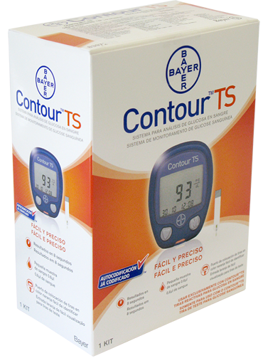

Contour™ ts Medidor de Glucosa
en Sangre

DESCRIPCIÓN:
Sistema portátil para medición de glucosa en sangre total (capilar, venosa o arterial), listo para usar y obtener resultados confiables al sacarlo del empaque sin necesidad de chips, códigos o configuraciones.
CARACTERÍSTICAS:
El Glucómetro Contour™ TS está diseñado para su uso en consultorios médicos, clínicas y hospitales por personal profesional de la salud y para su uso en el hogar por personas con o sin diabetes.
El sistema no requiere ningún tipo de chip, código o configuración inicial, el Glucómetro Contour™ TS está listo para realizar determinaciones de glucosa en sangre al sacarlo del empaque, obteniendo un resultado fácil, rápido, preciso y confiable en tan sólo 8 segundos y con una mínima cantidad de muestra de sangre.
LIBRE DE INTERFERENCIAS:
- El sistema corrige o compensa automáticamente la posible interferencia por los niveles de hematócrito extremadamente bajos o altos (neonatos, embarazo, deshidratación, anemia, trastornos pulmonares) asegurando una adecuada precisión y exactitud en rangos de hematócrito de 0-70%.
- Corrige o compensa automáticamente la posible interferencia por los niveles de oxígeno en la sangre, asegurando una adecuada precisión y exactitud para pacientes en terapia intensiva o que se encuentren a diferentes niveles de altitud.
- Corrige o compensa automáticamente la posible interferencia por la presencia de medicamentos en niveles elevados como ácido ascórbico y paracetamol, o bien la presencia de sustancias propias del organismo humano presentes en concentraciones más allá de sus límites normales como bilirrubina, ácido úrico, colesterol, triglicéridos, etc.
RESUMEN DEL DESEMPEÑO:
Excede los requisitos más estrictos de la norma internacional ISO 15197. El estudio de desempeño demostró que 97.9% de los resultados obtenidos con el sistema Contour™ TS (glucómetro y tiras) estuvieron dentro de la norma de exactitud de la norma.
ESPECIFICACIONES TÉCNICAS:
|
Tipo de muestra |
Sangre completa (capilar, venosa, arterial). |
|
Rango de medición |
10 a 600 mg/dL de glucosa. |
|
Altitud |
Hasta 3,048 metros. |
|
Rango de hematócrito |
0-70% sin mostrar interferencias. |
|
Memoria |
Almacena 250 resultados. |
|
Tipo de batería |
Batería de litio de 3 voltios (DL2032 o CR2032). |
|
Vida útil de la batería |
Aproximadamente 1,000 mediciones (promedio de 1 año). |
|
Temperatura |
5 a 45ºC. |
|
Humedad |
10 a 93% de humedad relativa. |
Consulte a su médico.
Registro: 0938R2007 SSA (sólo instrumento)
Registro: 0105E2008 SSA (instrumento, tiras y accesorios)
DATOS COMPLEMENTARIOS: Para mayor información favor de comunicarse a:
Ascensia Diabetes Care México, S. de R.L. de C.V.
Teléfonos: 9171-1057, 01-800-3352-6266
e-mail: support@contournext.com
www.diabetes.ascensia.com